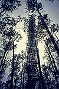

P.I.(s): Gerry den Hartog -- Atmospheric Environment Service (AES)
Co-I(s): R.E. Mickie, Harold H. Neumann, N.B.A. Trivett -- AES
Objectives: To quantify and examine the controlling factors for CO2, O3, CH4, N2O exchange at the SSA-OA site in PANP and to determine diurnal and seasonal surface energy fluxes at the same site. This study complements TF-1. The broader objectives of the combined proposals include determination of the annual cycle for carbon and nitrogen at the site, with trace gas measurements now also including CO, NO, NO2, NH3, and possibly terpenes. Four types of measurements were done:
|  The flux tower at SSA-OA |  The tethersonde at SSA-OA |
Objectives:
To quantify and examine the controlling factors for CO2, O3, CH4, N2O exchange at the SSA-OA site in PANP and to determine diurnal and seasonal surface energy fluxes at the same site. This study complements TF-1. The broader objectives of the combined proposals include determination of the annual cycle for carbon and nitrogen at the site, with trace gas measurements now also including CO, NO, NO2, NH3, and possibly terpenes. Four types of measurements were done:
TF Overview || TF-1 | TF-2 | TF-3 | TF-4 | TF-5 | TF-6 | TF-7 | TF-8 | TF-9 | TF-10 | TF-11
 Send a data request to the BOREAS Data Manager (BOREAS Investigators only)
Send a data request to the BOREAS Data Manager (BOREAS Investigators only)
E-Mail a comment on this page to the curator 
Send e-mail to Fred Huemmrich, the BORIS representative for the TF group
Return to the TF Overview
Return to the BOREAS Science Groups Overview
Return to the BOREAS Home Page
Last Updated: October 30, 1997
{kind=link}